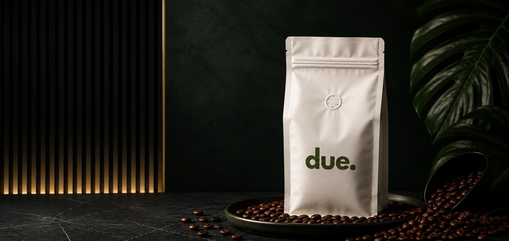

Lotes limitados
Cada lote viene de un origen específico (región, finca, vereda), tiene notas propias y se produce en pocas unidades. Cuando se agota, no vuelve.

Brief de proyecto
Café de especialidad pensado como regalo: el detalle que llevas a una casa especial, como quien llega con un buen vino.
01 · Resumen y concepto
Due Café vende café de especialidad pensado como regalo: el detalle que llevas a una casa especial, como quien llega con un buen vino. No compite por ser «el café más rico», sino por la experiencia de descubrir orígenes y notas distintas.
Cada lote viene de un origen específico (región, finca, vereda), tiene notas propias y se produce en pocas unidades. Cuando se agota, no vuelve.
La marca transmite que lo que hay es escaso y especial, pero sin hablar de «club VIP».
La gente se une para no perderse el siguiente lote y probar, en un solo lugar, cafés de distintas regiones.
Por ahora es una marca 100 % online, sin espacio físico.
02 · Objetivos de la landing
La página tiene tres acciones principales: comprar directo en la página, comprar por WhatsApp y suscribirse al correo.
Carrito sencillo y pago con la pasarela ePayco. Es la acción principal.
Alternativa para quien prefiere hablar con alguien o comprar para regalo corporativo. Botón con mensaje prellenado (por ejemplo: «Hola, quiero el lote Huila»).
Es la puerta a la comunidad. Sirve para avisar del próximo lote antes que nadie y contar la historia de cada origen.
Por definir: si además se crea un grupo o canal de WhatsApp para la comunidad, que le daría más vida a la marca entre lotes.
03 · Público objetivo
Adultos de 28 a 45 años en Colombia que regalan con criterio y quieren quedar bien con un detalle diferente.
| Perfil | Qué busca | Cuándo compra |
|---|---|---|
| El que regala con criterio | Un detalle con historia, que no sea «otra botella de vino» | Visitas, cumpleaños, cenas, agradecimientos |
| El curioso del café | Probar orígenes y notas nuevas, coleccionar lotes | Cada vez que sale un lote |
| Regalos corporativos | Detalles premium para clientes o equipos | Fin de año, eventos, onboarding |
Nivel de compra: medio-alto, coherente con un precio de hasta $140.000 COP por bolsa.
04 · Producto y modelo de lotes
Cada lote es una edición única de pocas unidades (alrededor de 100 bolsas) que no se repite.
| Dato | Definido | Ejemplo / por confirmar |
|---|---|---|
| Formato | Bolsa de café en grano | Tamaño (250 g o 500 g) por confirmar |
| Precio | Hasta $140.000 COP | Precio exacto por lote |
| Unidades por lote | Alrededor de 100 | Puede variar por lote |
| Origen | Región y finca específicas | Ej.: Huila, finca de una vereda |
| Notas de sabor | Propias de cada lote | Ej.: miel y canela |
| Empaque de regalo | Caja minimalista | Diseño final según referencia de la clienta |
| Envíos | Por definir | Cobertura, costos y tiempos |
Idea: cada lote puede llevar una ficha (origen, altura, proceso, notas, número de bolsa «23 de 100») que refuerce la exclusividad.
Ficha de lote · ejemplo
05 · Tono y mensaje
Cálido, cuidado y cercano: como alguien que te recomienda un café con la emoción de quien encontró algo especial.


06 · Dirección visual
Identidad existente: logo «due.» en minúscula, sans geométrica muy pesada, en verde oliva, con un punto final como firma. La paleta es de verdes naturales sobre casi negro y blanco. Estética minimalista, natural y sobria: mucho aire, verdes profundos y el blanco como respiro. Los hex son aproximados, tomados de la imagen; confirmar con el archivo original.
#131812 · #161B11 · #1F2316Fondos oscuros, textos principales#FFFFFFFondo de secciones de lectura, respiro#324D34Secciones de marca y comunidad#3B5E40Fondos secundarios, tarjetas#5E5F20Color del logo, títulos, sellos de lote#7A9735Botones y llamados a la acción (el más vivo)Sans geométrica pesada para títulos, en línea con el logo (ej.: Outfit, Plus Jakarta Sans o Gilroy), y la misma familia en peso regular para textos. Opcional: una serif fina solo para nombres de lote y notas de sabor, como toque de etiqueta.
El «.» del logo puede ser el sello de la marca: viñetas, indicador de bolsas disponibles, cierre de titulares («Huila.» «Miel y canela.»).
Luz natural, fondos limpios, la caja minimalista en manos o sobre una mesa de visita, texturas de grano y de finca.
Ficha de lote tipo etiqueta, sello con número de bolsa, mapa simple de la región.
Cada lote puede tomar un acento de la paleta para sentirse como una edición nueva.
De arriba hacia abajo, con el botón de WhatsApp siempre visible.
07 · Estructura propuesta de la landing
El lote actual como protagonista (foto de la bolsa, origen, notas) con el botón «Comprar este lote» y, como secundarios, «Pedir por WhatsApp» y «Avísame del próximo lote».
Qué es Due y por qué es el detalle perfecto para llevar.
Ficha completa (región, finca, notas, proceso, precio) y contador de bolsas disponibles.
Tres pasos (eliges el lote, lo pagas en la página o lo pides por WhatsApp, lo recibes listo para regalar).
Ocasiones de uso y presentación del empaque.
Formulario de suscripción al correo y beneficio de unirse (enterarse primero del próximo lote).
Galería de lotes agotados con su sello de «agotado», para mostrar historia y escasez.
Envíos, molienda, pagos, regalos corporativos.
Redes, WhatsApp y suscripción de nuevo.
08 · Por confirmar con la clienta
Estos puntos se resuelven en una sola revisión para arrancar el diseño.

Próximo paso
Enviar este brief a la clienta, recibir sus respuestas y presentar la primera propuesta de diseño de la landing.